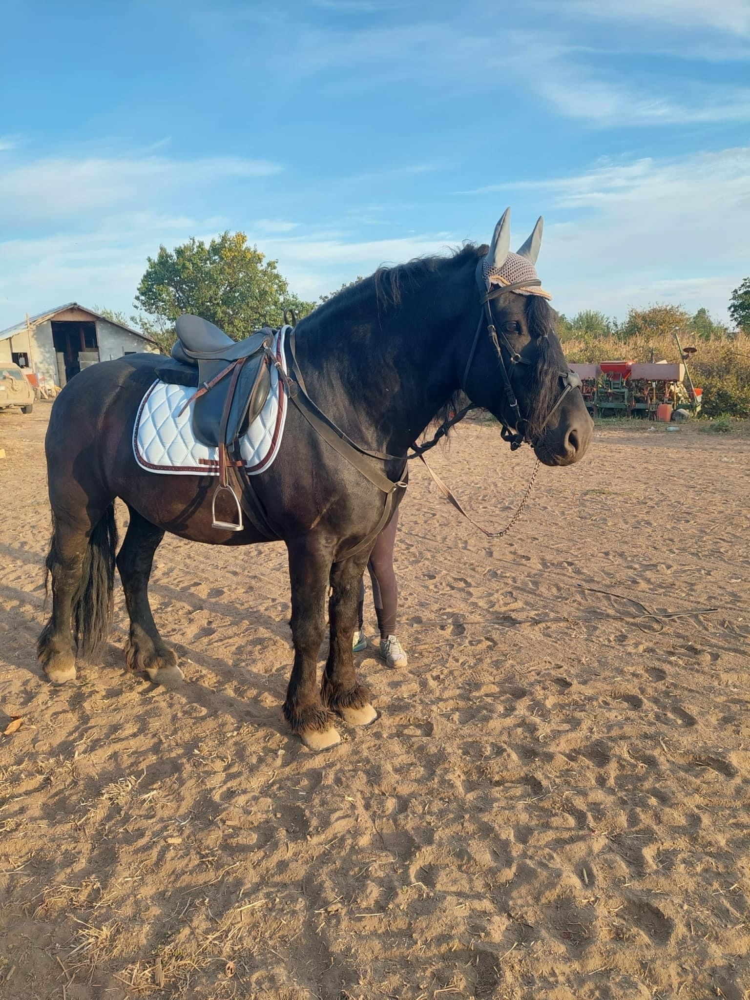
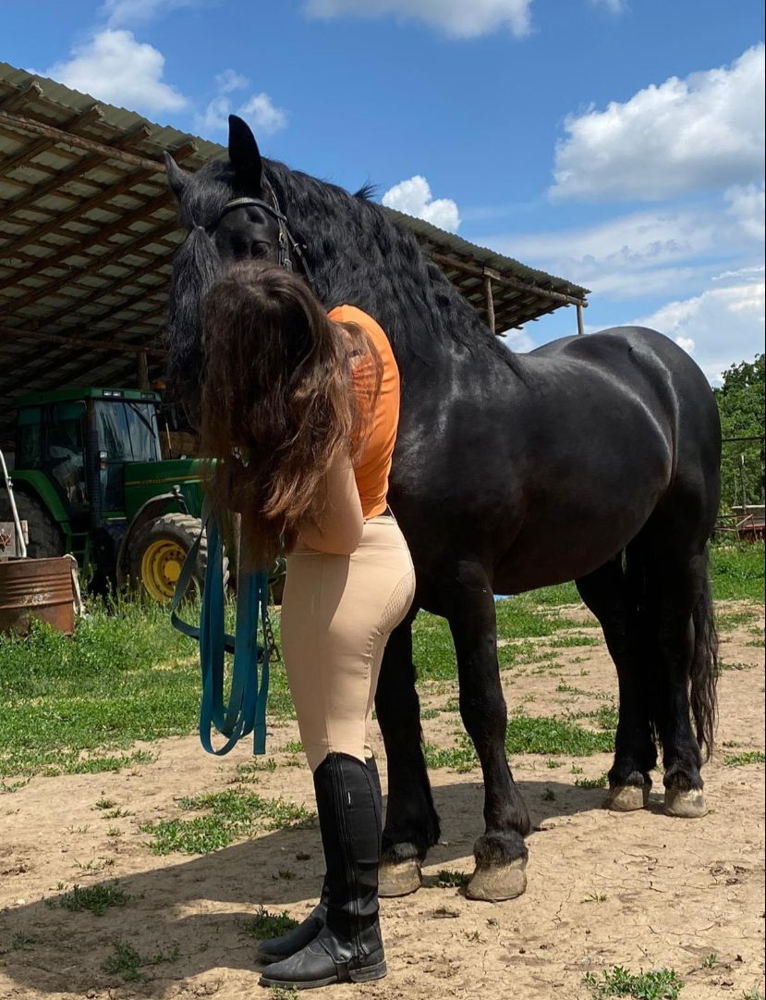
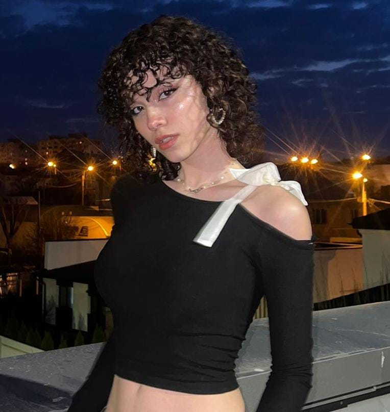
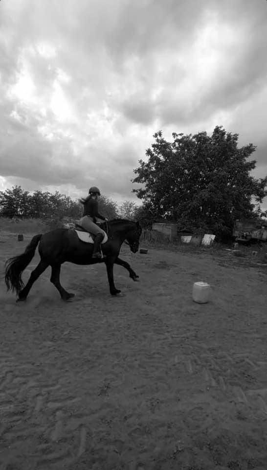

Acasă
La Pas-cu-pas Galați, fiecare bătaie a inimii este un pas înainte către frumusețea echitației și armonia cu natura. Cu dedicare și compasiune, oferim și terapie pentru persoanele cu dizabilități, aducând bucurie și împlinire în viețile tuturor celor care trec pragul nostru.

Despre Noi
Suntem o echipă formată din șase tineri pasionați de echitație și dornici să împărtășească această pasiune cu ceilalți. Mai mult decât atât, suntem hotărâți să fim o forță pozitivă în comunitatea noastră, dedicându-ne să aducem bucurie și să oferim sprijin celor din jur. Indiferent de vârstă, experiență sau abilități, ne străduim să creăm un mediu cald și primitoare în cadrul căruia toți cei care ne vizitează să se simtă parte dintr-o familie de echitație plină de prietenie și înțelegere

Antrenori
Pentru noi, echitația nu înseamnă doar îndemânare și tehnică, ci și un mijloc de terapie și dezvoltare personală. Prin cursurile noastre de terapie, ne angajăm să oferim un spațiu sigur și susținător în care fiecare participant să exploreze beneficiile echitației într-un mod care să îi sprijine sănătatea mentală, fizică și emoțională. Cu o echipă dedicată de instruitori specializați în terapie prin echitație, vă ghidăm cu empatie și înțelegere în călătoria dvs. către vindecare și creștere personală.

Cu o experiență de 5 ani în echitație și o inimă plină de răbdare, antrenoarea Sara este aici să vă însoțească în fiecare pas al călătoriei dumneavoastră către excelență. Cu atenție la detalii și o abordare caldă, Sara vă încurajează să depășiți limitele și să vă atingeți obiectivele, transformând fiecare lecție într-o experiență memorabilă și edificatoare.

Cu o pasiune care a început încă din copilărie și cu o experiență de 3 ani în lumea echitației, antrenorul Gabi aduce o energie contagioasă și o profundă înțelegere a sportului. Inspirat de propria sa călătorie în echitație, Gabi își dedică timpul și cunoștințele pentru a împărtăși această pasiune cu alții, transformând fiecare lecție într-o oportunitate de creștere și bucurie.
Servicii
La Pas-cu-pas Galați, oferim mai mult decât lecții de echitație - aducem în viața dumneavoastră aventura, conexiunea și învățarea constantă.

Pachete promotionale:
- La 2 ședințe de echitație, a 3-a este gratuită!
- Prima ședință de terapie este gratuită!
- Pentru grupuri de elevi de peste 10 persoane va fi o reducere de 35%!
Tarife:
Copii cu vârsta sub 14 ani:
- 30 minute - 50 RON
- 60 minute - 90 RON
- 90 minute - 120 RON
Adulti:
- 30 minute - 70 RON
- 60 minute - 130 RON
- 90 minute - 170 RON
Persoane cu dizabilitati:
- 30 minute - 100 RON
- 60 minute - 150 RON
- 90 minute - 200 RON
Relatia cu Rubin
Relația antrenoarei noastre, Sara, cu cabalinele a început de la o vârstă foarte fragedă. Ea avea ponei și caluți, dar la început nu știa cum să lucreze cu ei, iar conexiunea cu aceștia lipsea. Totuși, pasiunea pentru echitație a început să se contureze în timpul cursurilor pe care le-a urmat, iar treptat a descoperit că aceasta poate deveni mult mai mult decât o simplă activitate - poate deveni o adevărată pasiune și o sursă de bucurie.
Părinții Sarei i-au făcut o surpriză minunată, cumpărându-i un cal special, numit Rubin. Rubin nu era doar un cal obișnuit, ci era un partener devotat și înțelegător, cu o personalitate blândă și iubitoare. Această surpriză a fost un moment de cotitură în viața Sarei, deoarece i-a permis să dezvolte o legătură profundă și să exploreze întreaga gamă de emoții și experiențe pe care le poate oferi relația cu un animal de talie mare.
Odată ce Sara și Rubin au început să lucreze împreună, au creat o legătură specială, bazată pe încredere reciprocă și respect. De fiecare dată când se urca pe șaua lui Rubin, Sara simțea că se află într-un loc alături de cel mai bun prieten, iar fiecare moment petrecut împreună era plin de bucurie și armonie. Această relație cu Rubin nu doar că a întărit pasiunea și abilitățile Sarei în echitație, ci i-a adus și o profundă înțelegere a legăturii dintre om și animal.